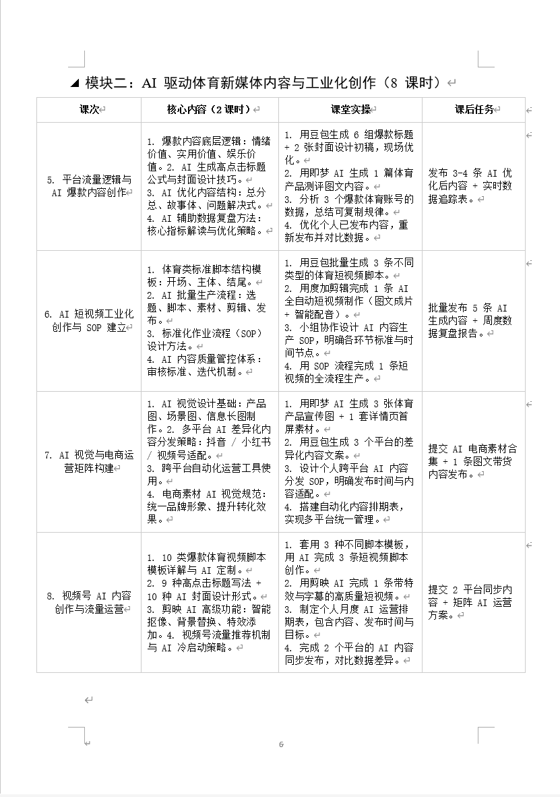
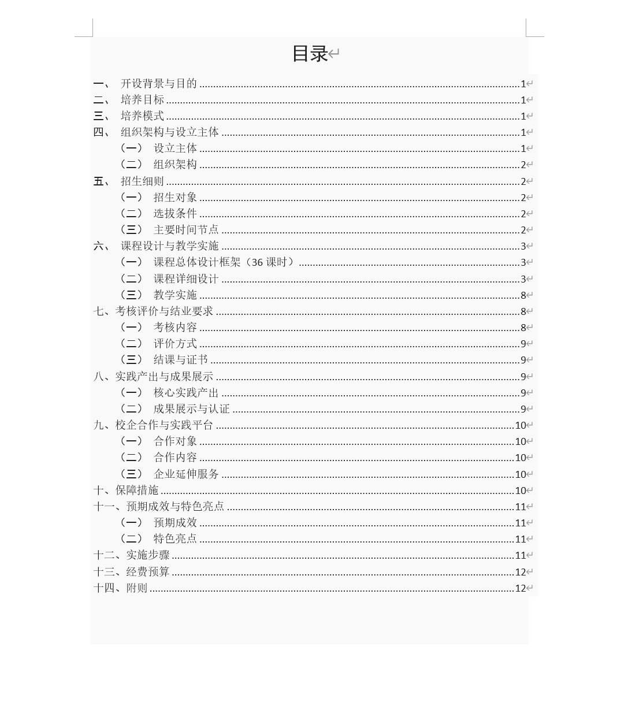
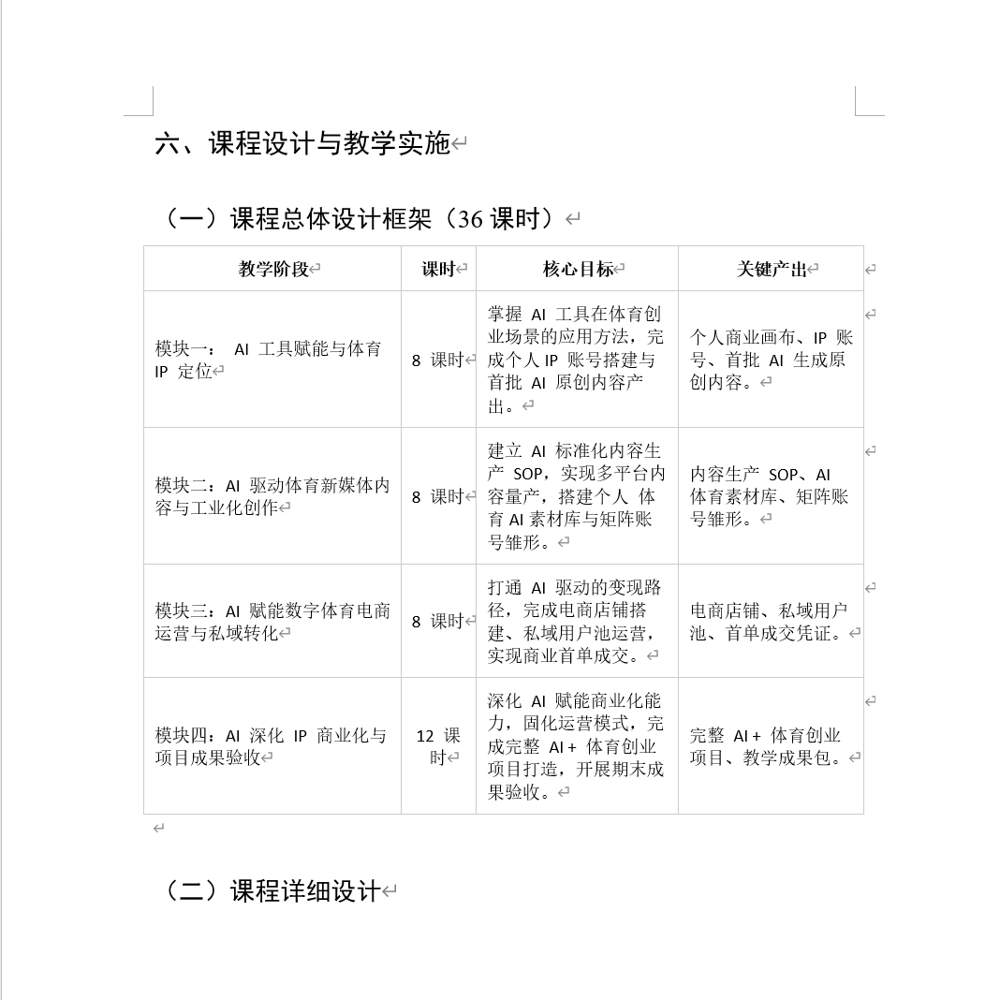
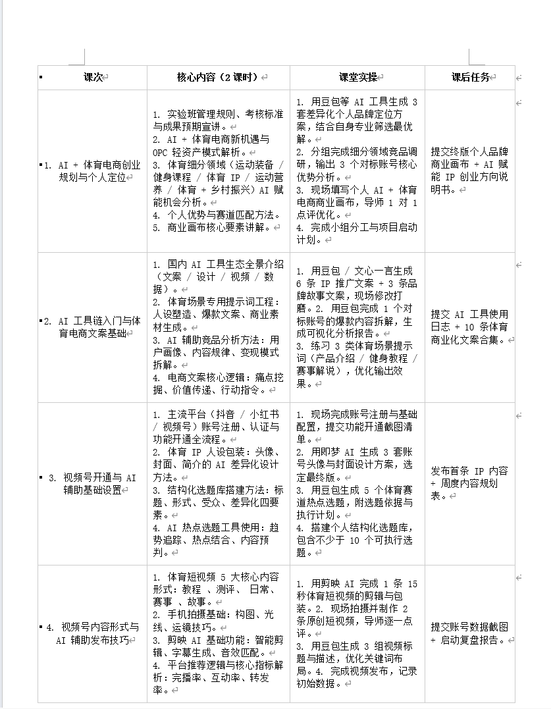

AI产教融合专业共建



秋叶集团联合武汉体育学院创新创业学院共建
"体育+AI+商业"实验班，打造体育院校双创人才培养新范式
实验班采用校企合作联合办学模式，由创新创业学院牵头，秋叶集团全程承办，覆盖招生选拔、AI特色课程研发、教学实施、创业辅导、成果验收全流程。项目借鉴华中科技大学新闻学院实训营的成熟经验，以16周项目制小班教学（约40人）为载体，实行"校内教师 + 企业AI实战导师"双师授课
课程体系
26课时"AI+体育双创"课程设计与实施，贴合体育院校专业特色
实战实训
AI工具链实训（豆包、即梦等）完成AI矩阵IP、新媒体运营、电商直播等项目实践
成果闭环
项目路演辅导与成果验收，沉淀课程资料与成果展示，并提供线上运营辅导